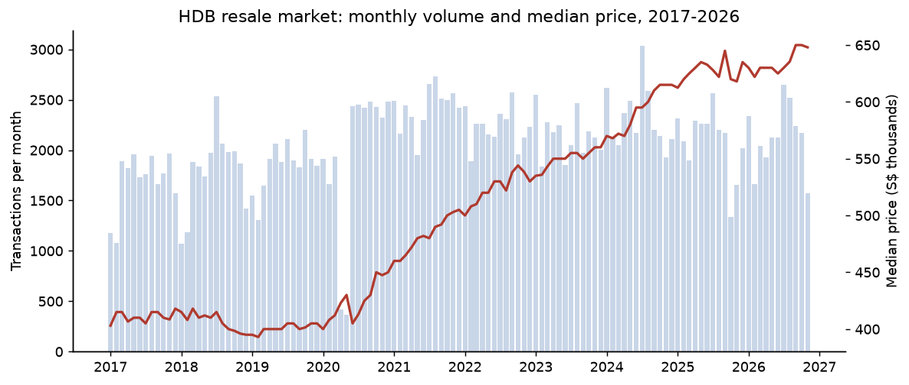
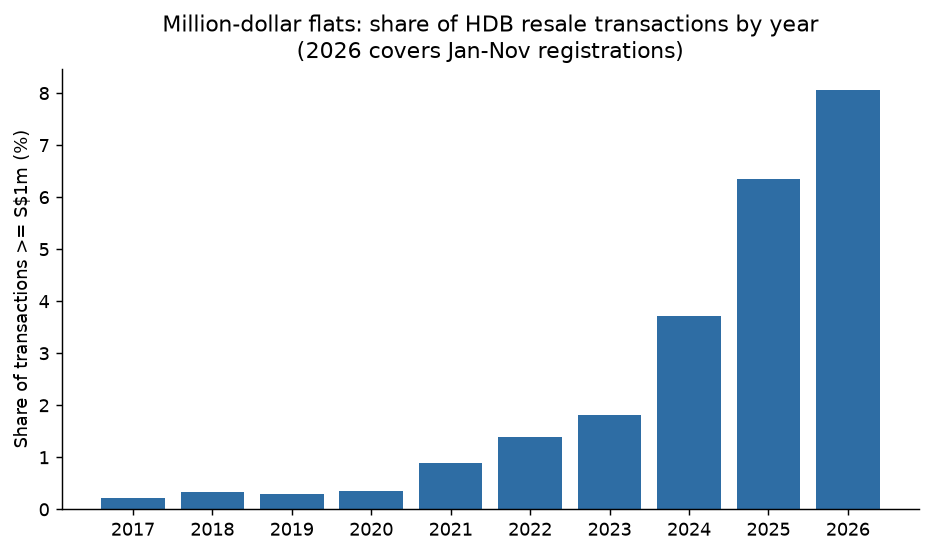
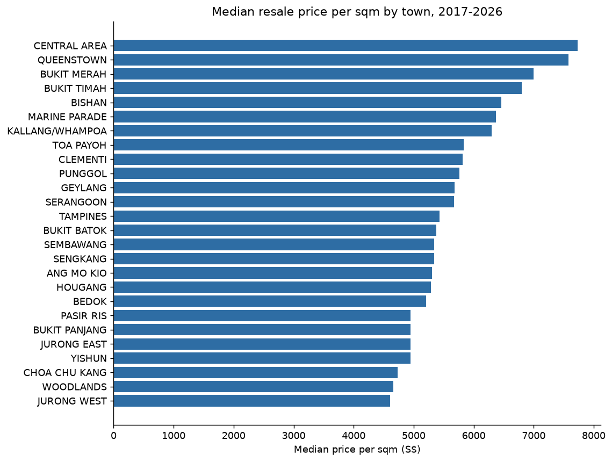
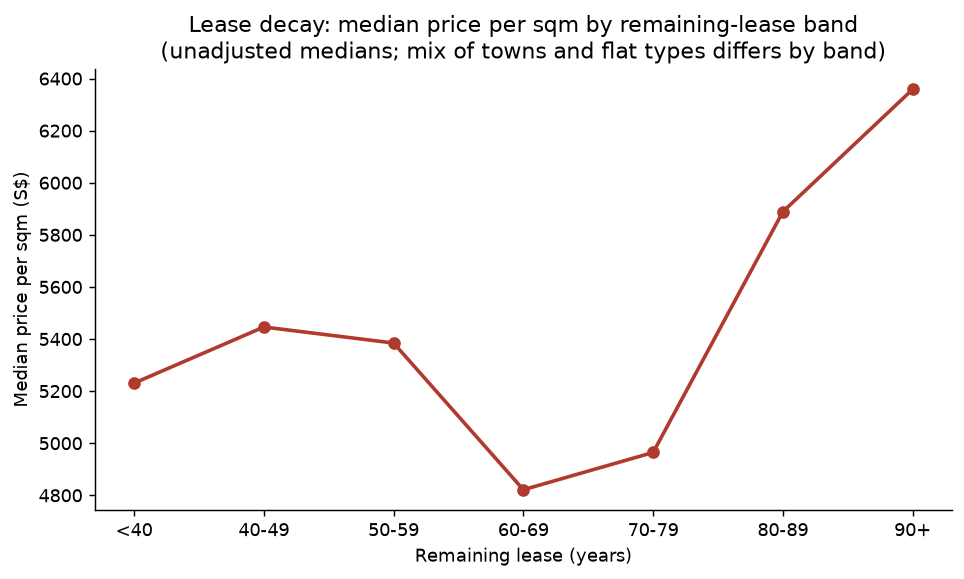
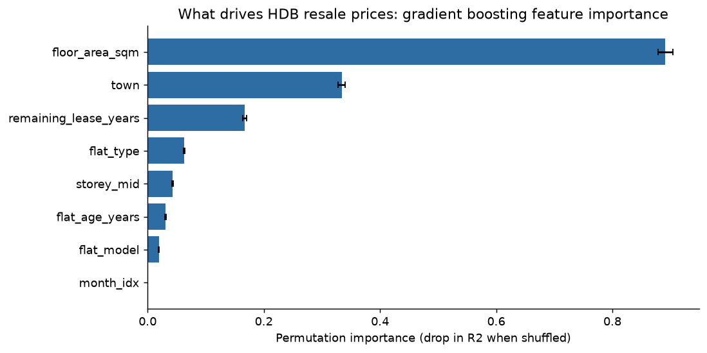
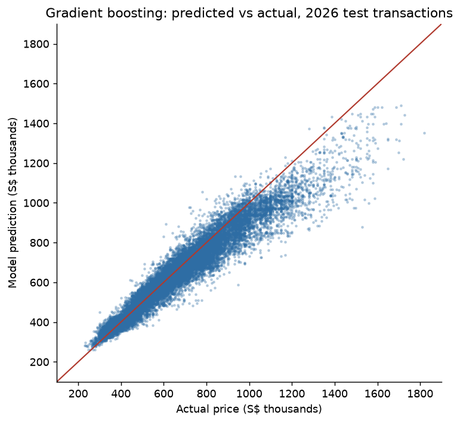

Prepared for a Singapore proptech startup building an HDB home-valuation tool. Data: 245,123 HDB resale transactions registered 2017-01 to 2026-11 (data.gov.sg, official records). This dashboard belongs to a simulated freelance engagement created for portfolio purposes; the client brief is fictional, the data and results are real.


| Town | Transactions | Median price | Median S$/sqm |
|---|---|---|---|
| CENTRAL AREA | 1,902 | S$580,000 | S$7,732 |
| QUEENSTOWN | 6,750 | S$680,000 | S$7,579 |
| BUKIT MERAH | 9,336 | S$668,000 | S$7,000 |
| BUKIT TIMAH | 600 | S$792,500 | S$6,802 |
| BISHAN | 4,291 | S$705,000 | S$6,464 |
| Town | Transactions | Median price | Median S$/sqm |
|---|---|---|---|
| JURONG WEST | 16,035 | S$465,000 | S$4,609 |
| WOODLANDS | 17,434 | S$472,000 | S$4,664 |
| CHOA CHU KANG | 10,979 | S$498,000 | S$4,731 |
| YISHUN | 16,572 | S$438,000 | S$4,943 |
| JURONG EAST | 4,959 | S$450,000 | S$4,945 |


Holding other factors constant in the hedonic model, each additional year of remaining lease is associated with about +1.0% on price. The raw curve above is flatter because older-lease bands mix smaller flats in central towns with larger flats elsewhere.


Floor area is the dominant price driver, followed by town and remaining lease. The gradient boosting model prices a typical resale flat within about 6% of its transacted price on unseen 2025-2026 data.
| Town | Flat type | Transactions | Median gap vs model |
|---|---|---|---|
| BUKIT MERAH | 2 ROOM | 30 | -4.5% |
| TOA PAYOH | 3 ROOM | 376 | -3.6% |
| YISHUN | 4 ROOM | 717 | -2.7% |
| BUKIT BATOK | EXECUTIVE | 67 | -2.4% |
| JURONG EAST | 4 ROOM | 128 | -2.3% |
| Town | Flat type | Transactions | Median gap vs model |
|---|---|---|---|
| QUEENSTOWN | 5 ROOM | 83 | +14.3% |
| CENTRAL AREA | 3 ROOM | 60 | +11.6% |
| SERANGOON | EXECUTIVE | 47 | +9.6% |
| CLEMENTI | 5 ROOM | 68 | +9.2% |
| TOA PAYOH | 5 ROOM | 141 | +9.1% |
Limitations: prices are nominal (not inflation-adjusted). HDB excludes transactions that may not reflect full market price, such as sales between relatives. Location is known at block level only; renovation, view, floor-level amenities and exact distance to MRT are not in the data and are part of the model's remaining error. "Below the model" means below what flats with the same recorded attributes transacted at; it is not investment advice.